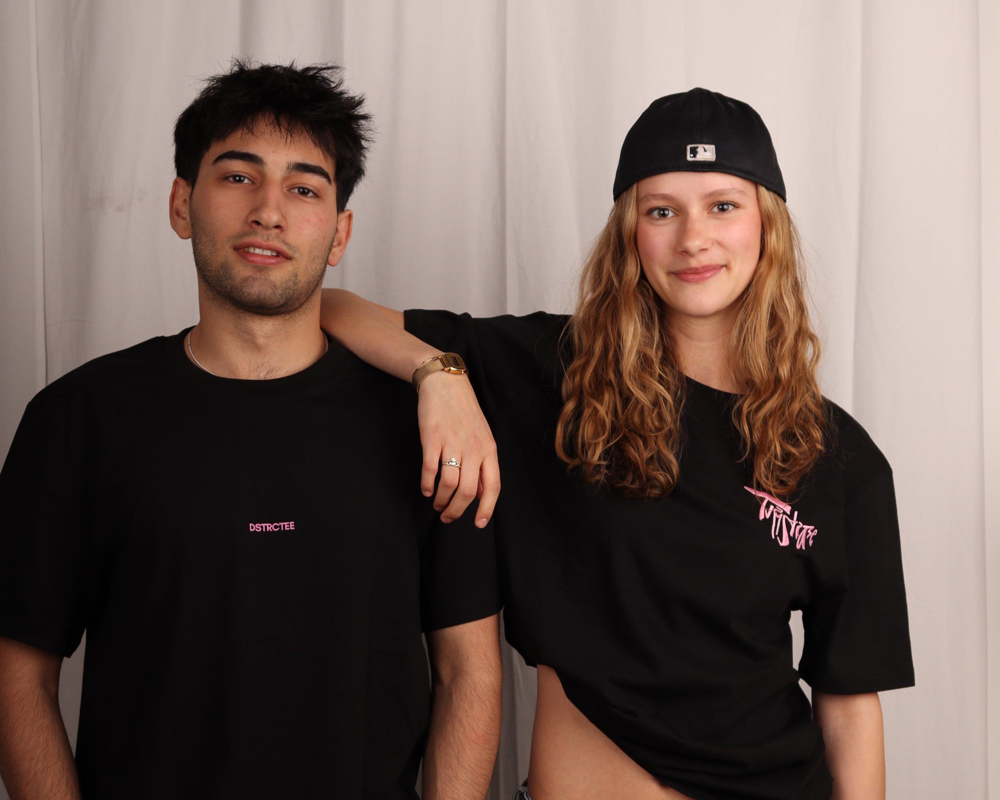

Jeder Kiez hat seine Kunst.
DSTRCTEE war Berliner Streetwear mit einem Motiv für jeden Bezirk – entworfen von lokalen Artists. Vom Müggelsee bis zur Sonnenallee: ein Shirt, ein Kiez, eine Geschichte.

Kunst aus dem Kiez, tragbar gemacht.
Acht Tees, acht Berliner Bezirke, acht Handschriften. Jedes Motiv ist eine Zusammenarbeit mit Künstler:innen aus der Stadt – gedruckt on demand auf zertifizierter Bio-Baumwolle.
Lokale Artists
Jedes Design stammt von einer Künstlerin oder einem Künstler aus Berlin.
Ein Kiez pro Shirt
Friedrichshain, Neukölln, Kreuzberg, Moabit, Köpenick & mehr.
Nachhaltig
100 % Bio-Baumwolle, GOTS/OCS, OEKO-TEX 100, PETA-Approved Vegan.
On demand
Produziert nur auf Bestellung – gegen Überproduktion.
Aktuell pausiert.
Der Shop wird geschlossen. Diese Seite hält das Archiv lebendig. Du kannst weiterhin durch alle Motive stöbern – und uns deine E-Mail dalassen, falls DSTRCTEE zurückkommt.